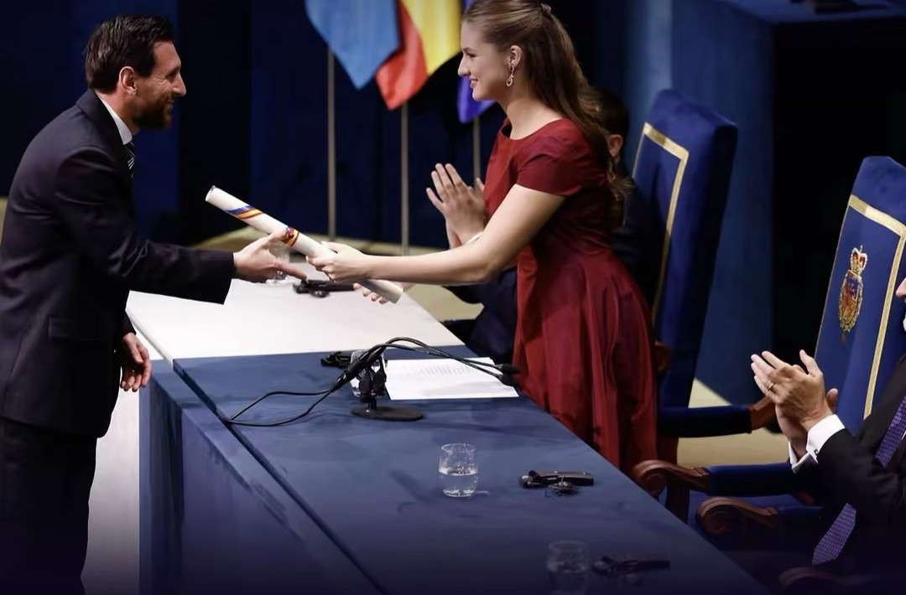
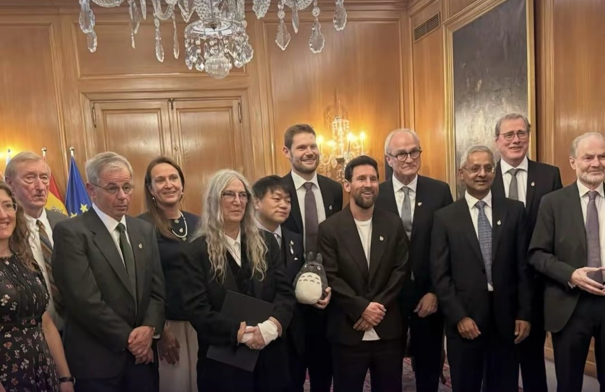

One of one: Messi wins the Princess of Asturias Award on his own
Spain's highest cultural honour has gone to football before, but never to one footballer alone. In Oviedo on Friday night, that changed.

Two weeks after saying goodbye to Argentina, Lionel Messi was back on a stage, this time in a suit. On Friday 23 October 2026, at the Teatro Campoamor in Oviedo, he received the 2026 Princess of Asturias Award for Sports, becoming the first footballer to win it on his own.
The momentHanded over by Princess Leonor

The award was presented by Princess Leonor, the heir to the Spanish throne, with King Felipe VI and Queen Letizia in the audience. In her speech she praised the way Messi read the game and made decisions in fractions of a second, always putting the team ahead of himself, and said he had turned the extraordinary into routine.
Why it's historyThe first to win it alone
Football has been honoured by the Princess of Asturias Awards before, but always as a team or a pair. Brazil's national team won the sports award in 2002, after their fifth World Cup, and Spain's Xavi Hernández and Iker Casillas shared it in 2012. Messi is the first footballer to be recognised by himself. He joins a list of sports winners that includes Serena Williams, Rafael Nadal and Kenya's own Eliud Kipchoge.
Why he wonMore titles than anyone else
When the jury named him back on 3 June, it called him the player who has won more titles than anyone in the history of football. But it also pointed beyond the trophies, to his humility on the pitch, his commitment to team play and his charity work giving disadvantaged children access to education and healthcare.
The class of 2026In good company

Messi shared the week with the rest of this year's laureates, among them the musician Patti Smith and Studio Ghibli, the Japanese animation house behind Spirited Away and My Neighbor Totoro, which won the award for Communication and Humanities. Look closely at the class photo and you'll spot a Totoro.
Sources
- Daily Sabah: Messi becomes 1st footballer to win Asturias Award individually (24 Oct 2026)
- Goal: Princess Leonor presents Messi with award in Oviedo (23 Oct 2026)
- Taipei Times / AFP: Messi receives top Spanish award from heir to throne
- CRHoy: Messi wins the 2026 Princess of Asturias Award for Sports (3 Jun 2026)
- ¡Hola!: Messi reacts to winning the Princess of Asturias Award (Jun 2026)
- Africanews: Kenya's Eliud Kipchoge wins Spain's 2023 Asturias award for sports
- Fundación Princesa de Asturias: Studio Ghibli, 2026 laureate
- Cartoon Brew: Studio Ghibli wins Spain's Princess of Asturias Award
Every fact in this story was checked against at least two independent sources.